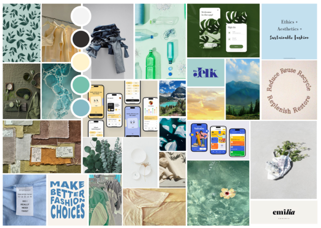
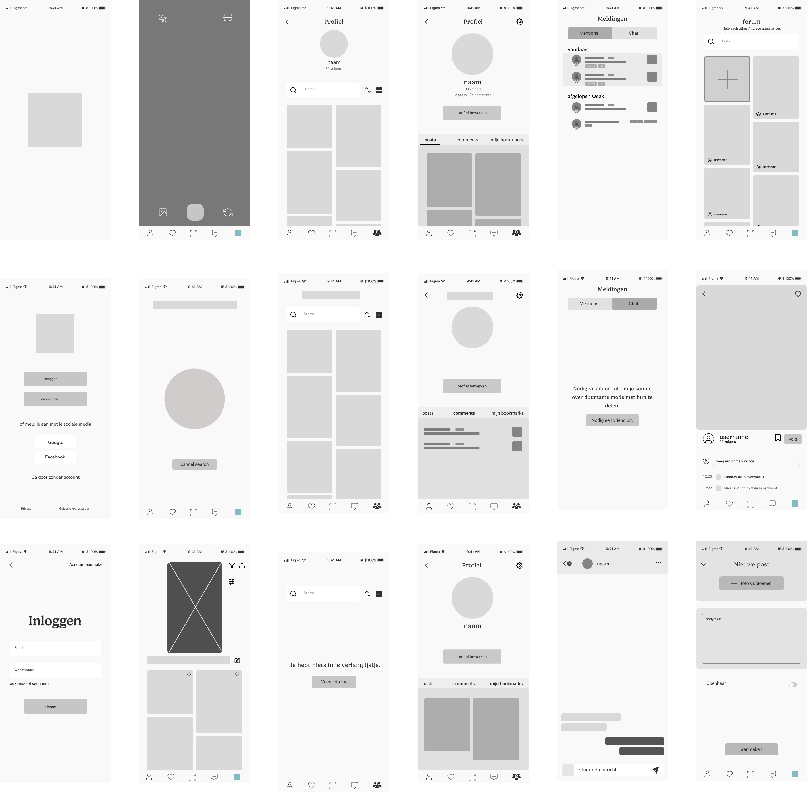
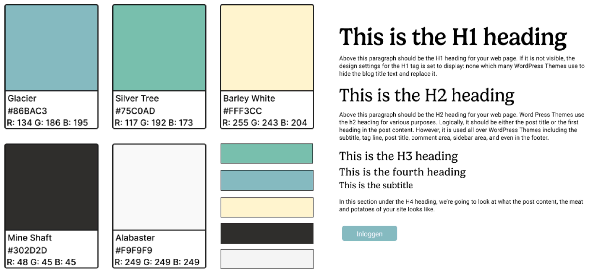
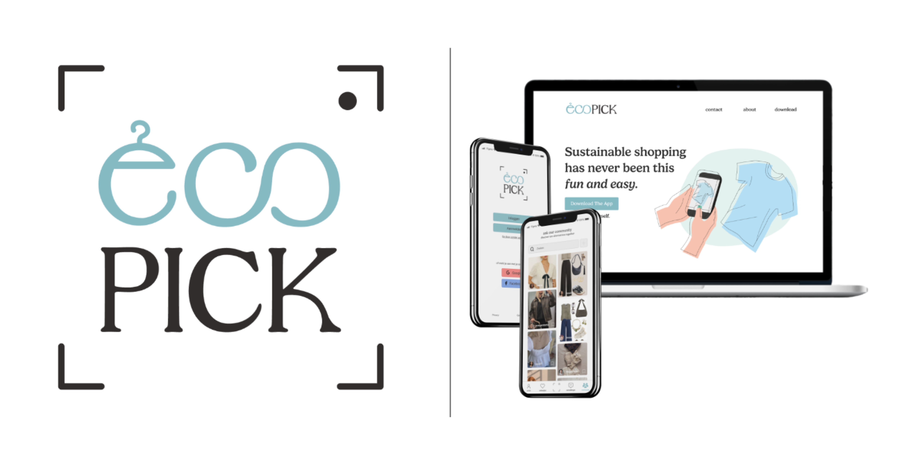

Context
Voor Lab1 rond sustainable fashion ontwikkelde ik een concept-app. ecoPick speelt in op de groeiende vraag naar duurzame mode door consumenten op een laagdrempelige manier toegang te geven tot alternatieve kledingstukken die beter zijn voor mens en milieu.
Uitdaging
Veel consumenten willen duurzamer winkelen, maar vinden het moeilijk om geschikte alternatieven te vinden die betaalbaar én stijlvol zijn. De markt is versnipperd, labels zijn onduidelijk en fast fashion blijft de standaard. Er is nood aan een intuïtieve oplossing die duurzame keuzes toegankelijk maakt.
Oplossing
Met ecoPick uploadt de gebruiker een foto van een kledingstuk, waarna de app via AI-beeldherkenning duurzame alternatieven aanbiedt. Naast integraties met tweedehandsplatformen en duurzame merken, voorziet de app een community waar gebruikers elkaar tips geven. Via affiliate-links kunnen merken makkelijk deelnemen en blijft het businessmodel schaalbaar.
Interactieve Prototypes
Mijn proces
Definitie & Analyse
In deze fase onderzoek ik het probleem, de doelgroep en de context rond duurzame mode om de basis van het concept scherp te stellen.
- Onderzoek naar fast fashion, overconsumptie en de nood aan transparantie binnen de mode-industrie.
- Doelgroepanalyse: consumenten tussen 18 en 26 jaar die bewuster willen kopen maar moeite hebben om duurzame alternatieven te vinden.
- Interviews en enquêtes uitgevoerd om frustraties en verwachtingen te begrijpen.
- Analyse van bestaande apps zoals Hopshop en Vinted om opportuniteiten en tekortkomingen te identificeren.

Concept & UX Design
Ik werk het concept uit tot een duidelijke gebruikerservaring met focus op gebruiksgemak, herkenbaarheid en community.
- Concept: AI-beeldherkenning waarmee gebruikers foto’s van kleding uploaden en duurzame alternatieven vinden.
- Wireframes en user flows uitgewerkt rond uploadproces, zoekresultaten en communityfunctionaliteit.
- Feedback toegepast om de interface intuïtiever te maken (bv. vergelijkingspercentages, filters, aantal resultaten instelbaar).


Visueel Design
De visuele stijl benadrukt duurzaamheid, vertrouwen en eenvoud, met een frisse en toegankelijke uitstraling.
- Ontwerp van een visuele identiteit voor ecoPick met focus op natuurlijke kleuren en minimalistische typografie.
- UI-design uitgewerkt in Figma, inclusief iconen, illustraties en feedbackschermen.
- Focus op herkenbare en toegankelijke interface voor jonge gebruikers.
- High-fidelity prototypes getest op mobile.

Development & Testing
In deze fase lag de nadruk op het visueel presenteren van het concept, niet op technische werking.
- Prototype uitgewerkt om structuur, stijl en gebruikersflow te tonen.
- Geen werkende functies ontwikkeld, enkel visuele representatie van de kaart.
- Feedback verzameld op vormgeving, navigatie en duidelijkheid van het concept.

Reflectie
Ecopick liet me inzien hoe groot de kloof is tussen wenselijkheid en haalbaarheid.
Veel jongeren willen duurzamer shoppen, maar de drempels zijn hoog. Door deze inzichten te koppelen
aan een schaalbaar concept met AI-technologie en affiliate marketing, konden we een realistisch
voorstel formuleren.
Persoonlijk leerde ik hoe belangrijk concrete feedback en iteratie zijn bij
conceptontwikkeling. Interviews en desk research verrijkten mijn idee en brachten verbeterpunten naar boven,
zoals betere beeldherkenning en de rol van een ondersteunende community.